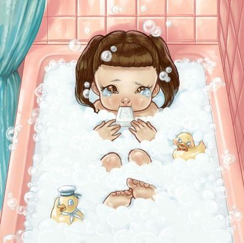

Melanie Martinez
Es una cantante, compositora, directora y actriz estadounidense.
Ganó reconocimiento en 2012 después de participar en la tercera temporada del programa de televisión "The Voice" en los Estados Unidos.
Sin embargo, es más conocida por su carrera musical, en la que combina elementos de pop alternativo, electropop y hip hop con letras que a menudo exploran temas oscuros y controvertidos.
Su álbum debut, "Cry Baby", lanzado en 2015, fue muy exitoso, alcanzando el puesto número 6 en el Billboard 200. El álbum fue acompañado por una película musical que ella misma dirigió, creando un universo visual distintivo para su música.
Melanie Martinez es reconocida por su estilo único y sus videos musicales elaborados, que a menudo tienen un aspecto surrealista y a veces perturbador.
A lo largo de su carrera, Melanie ha generado controversia debido a la naturaleza de sus letras y videos, que a menudo abordan temas como la infancia, la sexualidad y las relaciones tóxicas. Sin embargo, también ha ganado una base de seguidores leales que aprecian su creatividad y autenticidad artística.

Cry Baby
El álbum "Cry Baby" de Melanie Martinez es un viaje emocional a través de la infancia, la angustia adolescente y la complejidad de las relaciones.
Con un estilo que combina pop alternativo con elementos de fantasía oscura, cada canción cuenta una historia única que se entrelaza con el personaje central, Cry Baby.
Las letras profundas y a menudo crudas exploran temas como el abuso, la alienación, la autoaceptación y el empoderamiento femenino.
La música está impregnada de sonidos caprichosos y melodías pegajosas, pero también presenta una profundidad emocional que invita a la reflexión. Con una estética visual distintiva y una narrativa coherente, "Cry Baby" se convierte en más que un álbum; es una experiencia inmersiva que resuena con los oyentes a nivel personal.
Las canciones que pertenecen a este álbum son:
La canción que da nombre al álbum establece el tono para el viaje emocional que está por venir. "Cry Baby" presenta a la protagonista, una joven sensible y vulnerable, que enfrenta desafíos y luchas en su vida.
Una canción que explora la fachada de la perfección familiar, mostrando que detrás de las puertas cerradas, hay secretos y problemas ocultos.
Una mirada satírica a la hipocresía adulta y las relaciones disfuncionales, usando la metáfora de un vaso con tapa de seguridad para representar la negación y la falta de comunicación.
Esta canción utiliza la metáfora de un carrusel para ilustrar la naturaleza cíclica de las relaciones tóxicas y la dificultad de escapar de ellas.
Una crítica ingeniosa a la inmadurez emocional en las relaciones, con letras que comparan a un hombre con un niño que necesita aprender el abecedario emocional para madurar.
Una canción sobre la dificultad de expresar tus sentimientos y secretos, representada metafóricamente como la necesidad de lavarte con jabón para limpiar tus "pecados".
Melanie utiliza la metáfora de las ruedas de entrenamiento de una bicicleta para hablar sobre la necesidad de apoyo y seguridad en una relación, y la dificultad de dejar ir ese apoyo cuando llega el momento de madurar.
Una canción que muestra la vulnerabilidad y la soledad de Cry Baby, quien se siente ignorada y abandonada en su propia fiesta de cumpleaños.

Una narrativa oscura sobre el secuestro de Cry Baby por parte de un lobo disfrazado de oveja, que representa el peligro y la vulnerabilidad de las mujeres jóvenes en el mundo.
Una canción que narra la venganza de Cry Baby contra el lobo, utilizando una metáfora dulce y siniestra de galletas envenenadas con leche.
Melanie expresa los sentimientos de celos y envidia de Cry Baby hacia otra chica que está con su interés amoroso, mostrando la lucha interna entre querer ser amada y sentirse insegura.

Una poderosa crítica a los estándares de belleza irreales y la cirugía plástica, utilizando la metáfora de Mrs. Potato Head para ilustrar cómo la sociedad presiona a las mujeres para que se ajusten a ciertos ideales físicos.

Una canción que explora la lucha con la salud mental y la sensación de estar al borde de la locura, utilizando referencias al sombrerero loco de "Alicia en el País de las Maravillas" para transmitir una sensación de caos y desesperación.

K-12
El álbum "K-12" y la película cuentan la historia de Cry Baby, el personaje principal de Melanie, y su experiencia en una escuela ficticia llamada K-12.
A través de las canciones y las escenas de la película, se abordan temas como la presión social, la conformidad, la injusticia y la lucha por la autoaceptación y la individualidad dentro de un sistema educativo opresivo.
Las canciones de "K-12" son:
Esta canción marca el comienzo del álbum, presentando un tono oscuro y surrealista mientras Melanie canta sobre los problemas en el sistema educativo y la falta de atención a las necesidades emocionales de los estudiantes.

Una narración sobre los conflictos y la violencia que ocurren en las escuelas, reflejando la presión social y la lucha por la aceptación.

Una crítica mordaz a la corrupción y la falta de responsabilidad de las autoridades educativas, personificada en el director de la escuela.

Explora la sensación de ser constantemente observado y juzgado, como si la vida fuera una presentación pública.

Una metáfora sobre buscar refugio y escape de la opresión y el maltrato, representado por la oficina de la enfermera escolar.

Melanie critica la superficialidad y el comportamiento falso, usando el club de drama como una metáfora de las interacciones sociales en la escuela.

Una reflexión sobre los estándares de belleza y las expectativas de género impuestas a las mujeres jóvenes.
Un comentario sobre la superficialidad de algunas amistades y la búsqueda de relaciones genuinas y significativas.
Una poderosa canción sobre la dismorfia corporal y los trastornos alimentarios, utilizando el jugo de naranja como una metáfora de la presión para conformarse a los ideales de belleza.

Melanie habla sobre sentirse atrapada y castigada por no ajustarse a las normas, utilizando la detención escolar como una metáfora.
Una narrativa sobre el abuso de poder y la manipulación en las relaciones de autoridad, representada por la relación entre un estudiante y un profesor.
Una canción sobre las complejidades y los desafíos de las relaciones románticas en la adolescencia.

El cierre del álbum aborda la necesidad de un respiro y tiempo para uno mismo, criticando el sistema que agota a los jóvenes.
Portals
"Portals" es el tercer álbum de estudio de Melanie Martinez, lanzado el 31 de marzo de 2023.
Este álbum continúa explorando temas oscuros y surrealistas a través de una narrativa conceptual, como es característico del trabajo de Martinez.
Sin embargo, "Portals" se enfoca en una transformación y un renacimiento personal, utilizando metáforas de la vida, la muerte y el más allá.
El álbum sigue a Cry Baby, el alter ego de Martinez, en un viaje de transición desde la muerte hacia una nueva forma de existencia.
A través de las canciones, se exploran temas como la reencarnación, la introspección y el crecimiento personal.
Musicalmente, "Portals" mantiene la mezcla única de pop alternativo, art pop y elementos electrónicos que define el estilo de Melanie Martinez, con letras cargadas de simbolismo y una producción detallada que crea una atmósfera envolvente.
Las canciones de "Portals" son:
El renacimiento y la transición. Trata sobre la muerte metafórica de un yo anterior y la transformación hacia una nueva identidad.
Explora la sensación de vacío existencial y la búsqueda de significado en la vida.
Una crítica a la mentalidad cerrada y la falta de perspectiva en la sociedad.

Una fantasía oscura que mezcla elementos de cuento de hadas con una narrativa introspectiva.
Una metáfora de la purificación y el renacimiento a través de la luz.

Explora la idea de estar atrapado en una red de mentiras y manipulaciones.

Una canción sobre las personas que se aprovechan de los demás, drenando su energía y vitalidad.
Una metáfora de la lucha por encontrar y usar la propia voz en un mundo que intenta silenciarte.
Una reflexión sobre la flexibilidad y la adaptación, y cómo estas cualidades pueden ser tanto una fortaleza como una trampa.

Utiliza las fases de la luna como metáfora del cambio y la evolución personal.

Una exploración de la identidad y el poder, utilizando la mitología de las ninfas.

Trata sobre confrontar y superar la maldad y la negatividad, tanto interna como externa.
Reflexiona sobre el origen y el renacimiento, cerrando el ciclo temático del álbum.